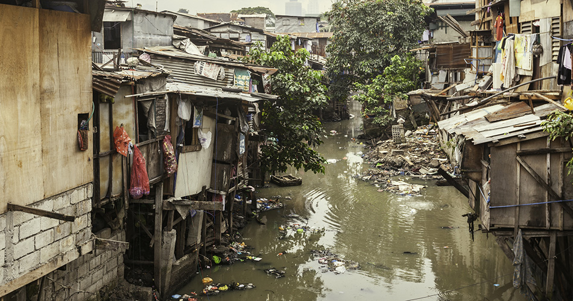

Saneamento básico no Brasil: conheça os números das regiões do país

O acesso ao saneamento básico no Brasil ainda não é uma realidade para todos. Embora seja uma necessidade básica da população, ainda há uma diferença regional muito grande em relação ao acesso a esses serviços no país. Enquanto alguns locais tiveram grandes avanços, outros seguem estacionados – e há quem diga vivemos ainda no século XIX quando o assunto é saneamento.
A falta de saneamento adequado e seus impactos na higiene da população têm reflexos diretos na saúde. Ampliar o acesso a esse sistema, portanto, resulta em melhorias nas taxas médias de internações pelas doenças causadas pela falta de saneamento básico, como diarreia, febre tifoide, cólera, infecções intestinais bacterianas, entre outras.
Devido à importância do assunto, preparamos este artigo separado em tópicos para você conhecer as condições do cenário do saneamento básico no Brasil e entender quais políticas podem causar impactos para a evolução desses números. Boa leitura!
- O saneamento básico no Brasil
- Os principais dados do saneamento no Brasil
- Avanços dos indicadores no Brasil
- Como evoluir no acesso a saneamento básico no Brasil
- Investimentos privados
O saneamento básico no Brasil
Para que uma área tão importante esteja no caminho certo para o desenvolvimento é fundamental que existam diretrizes que indiquem os rumos a seguir. Elas podem ser representadas na forma de leis municipais, estaduais e federais, ou como planos de saneamento básico.
A Lei 11.445/07 estabelece as normas nacionais para o saneamento básico. Cada um dos seus artigos ajudam a gestão a propor melhorias na prestação dos serviços e os caminhos para que todos os brasileiros tenham acesso e eles.
Um dos principais pontos apresentados na lei é a integralidade, com o objetivo de proporcionar o acesso aos serviços de forma a maximizar a eficiência das ações e dos resultados. Esse item mostra a importância de entender que os serviços de saneamento são complementares e devem estar associados.
O segundo ponto é a universalização, que representa o acesso aos serviços de saneamento básico a todos os cidadãos. No caso do Brasil, isso reflete a urgência de uma gestão associada. É importante salientar que o saneamento básico engloba o abastecimento de água potável, o esgotamento sanitário, o manejo e destinação adequada do lixo e o manejo das águas pluviais.
Os principais dados do saneamento no Brasil
O Ranking do Saneamento Básico 2019 do Instituto Trata Brasil contempla as 100 maiores cidades, nas quais habitam 40% da população. A pesquisa foi feita com base nos dados do Ministério do Desenvolvimento Regional.
De acordo com o ranking, o país ainda tem quase 35 milhões de pessoas sem acesso à água tratada, 100 milhões sem coleta de esgotos (representando 47,6% da população) e somente 46% dos esgotos produzidos no país são tratados. Isso significa mais dificuldade na prevenção de doenças e altos índices de poluição em rios de todo o país.
Das 100 maiores cidades brasileiras, 90 apresentam mais de 80% da população com água tratada. Por outro lado, apenas 46 municípios têm mais de 80% da população com coleta de esgoto. Com relação ao tratamento de esgotos, os dados são piores: apenas 22 municípios tratam mais de 80%.
Mais de 80% dessas grandes cidades têm perdas de água potável nos sistemas de distribuição superiores a 30%, o que indica um grande desafio a ser vencido no setor.
Avanços dos indicadores no Brasil
O levantamento mostra que os avanços no período de 2011 a 2017 foram pequenos. É possível também identificar uma queda geral dos investimentos, enquanto a concentração dos recursos nas 100 maiores cidades se mantém – mais de 50% dos investimentos estão concentrados nessas cidades.
Dos 100 municípios, apenas 9 têm níveis de perdas de faturamento total menores ou iguais a 15% (valor usado como parâmetro ideal). Em quase 70% das cidades do estudo, esse valor chega a ser superior a 30%.
Como evoluir no acesso a saneamento básico no Brasil
O Brasil tem enfrentado grandes desafios para garantir o acesso da população aos serviços de água e esgotamento sanitário. Para que uma parte expressiva da população brasileira possa ter acesso a esses serviços, uma das soluções é os municípios firmarem parcerias com empresas privadas que operam nesse setor.
Para se ter uma ideia, os investimentos em saneamento nos últimos anos foram entre R$ 10 bilhões e R$ 12 bilhões por ano. Se o país continuar investindo no setor nesse ritmo, o Brasil não terá sucesso no cumprimento da meta do plano de universalização do saneamento até 2033, conforme estabelecido no Plano Nacional de Saneamento Básico (PLANSAB).
Com os investimentos atuais, só veremos o país chegar à universalização após 2050, com cerca de 20 anos de atraso. Ou seja, o setor precisa de um aporte robusto e constante de investimentos para se desenvolver e, dessa forma, beneficiar o país com mais saúde, preservação ambiental, desenvolvimento social e geração de empregos.
Veja abaixo como o setor privado pode contribuir para a universalização do saneamento no Brasil:
Investimentos privados
O saneamento básico tem impacto em muitos assuntos fundamentais para o desenvolvimento humano sustentável, entre eles o equilíbrio ambiental e a saúde, com destaque especial para a saúde das mulheres.
Para que esse compromisso tão importante chegue a todos os brasileiros, é necessário adotar algumas estratégias. Entre elas, estão os investimentos privados na infraestrutura de saneamento e na prestação dos serviços. Eles se tornam necessários a partir do momento em que as instituições governamentais não conseguem suprir as demandas da população.
As políticas de saneamento estão concentradas no poder municipal desde a elaboração da Constituição Federal, em 1988. No Brasil, a primeira legislação sobre contratos público-privados surgiu na segunda metade dos anos 1990. Assim, novos investidores começaram a surgir, especialmente nas áreas comumente geridas pelo setor público, como o saneamento básico.
A concessão foi o primeiro modelo utilizado, e ocorre quando há transferência da administração de um serviço ou bem público, por um período pré-definido, a uma empresa privada, por meio de licitação. No caso do saneamento básico, isso quer dizer que a concessionária privada irá operar os serviços de água e esgoto conforme o contrato e sob fiscalização e regulação do poder público. Este modelo está fundamentado na Lei nº 8987/95.
A parceria público-privada é outro modelo de contrato em que serviços públicos são prestados pela iniciativa privada por determinado tempo. Nessa modalidade, a administração pública delega esses serviços mediante licitação. A principal diferença com relação ao modelo de concessão dos serviços é a forma de remuneração do ente privado. As PPPs, como são conhecidas, são reguladas pela Lei nº 11.079/2004.
Como vimos, no Brasil, o desafio da universalização dos serviços de saneamento ainda é grande. Por isso, a participação de empresas privadas que atuam no setor pode contribuir para levar os serviços com qualidade para mais brasileiros.
Até o momento, os números do saneamento básico no Brasil seguem estagnados e precisam de uma reação. Para isso, é importante haver discussões e parcerias entre concessionárias e poder público com o objetivo de construir uma nova história para o saneamento no Brasil, com serviços de qualidade e que atendam às necessidades de toda a população.